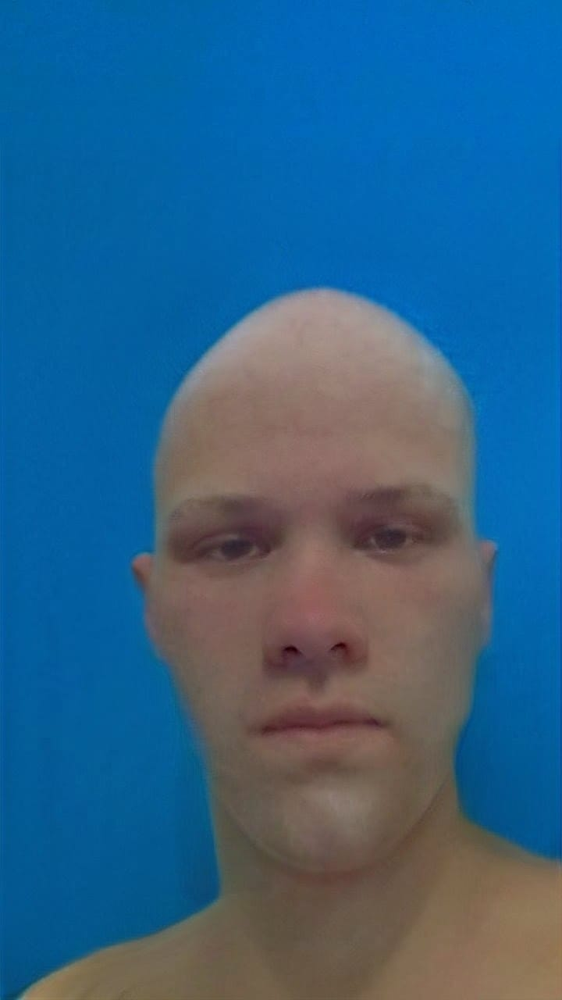
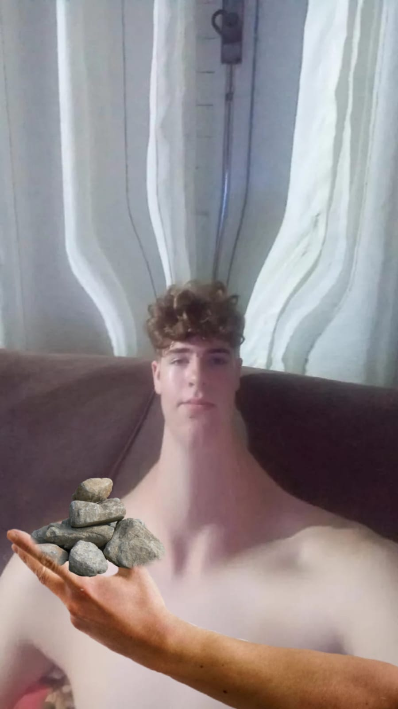
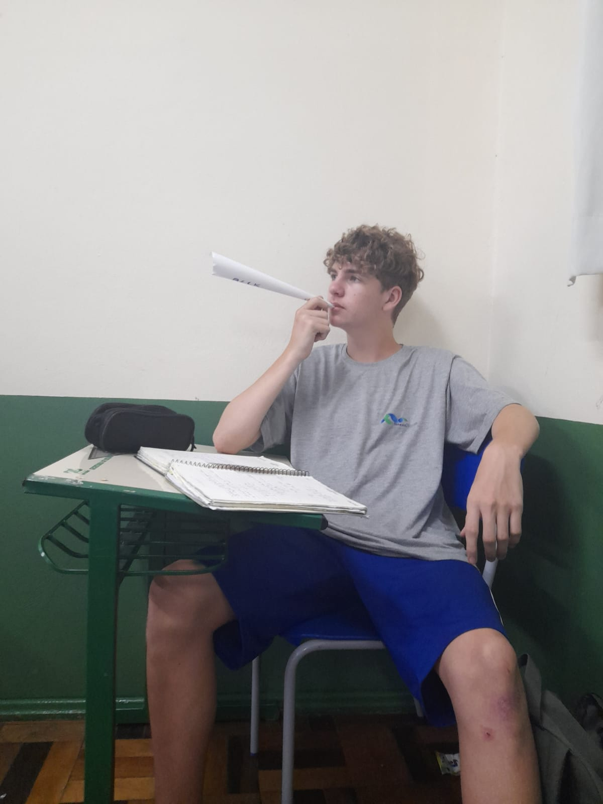
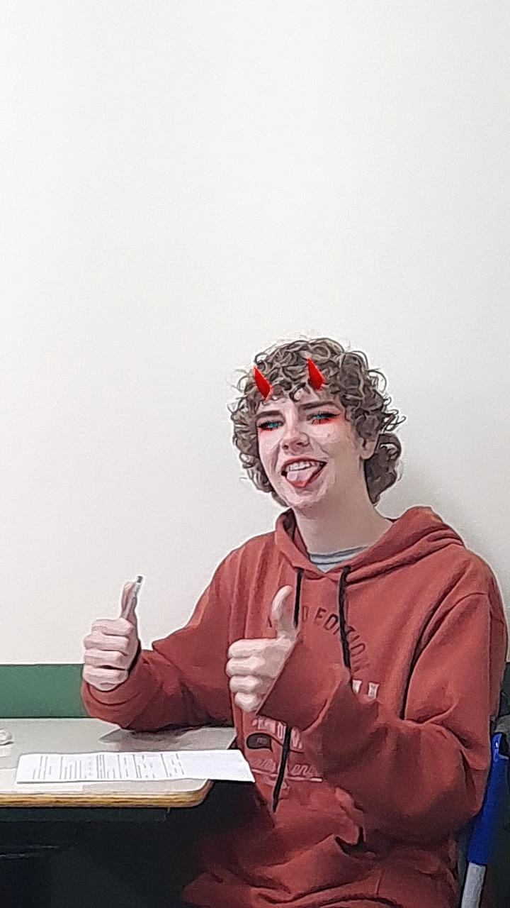
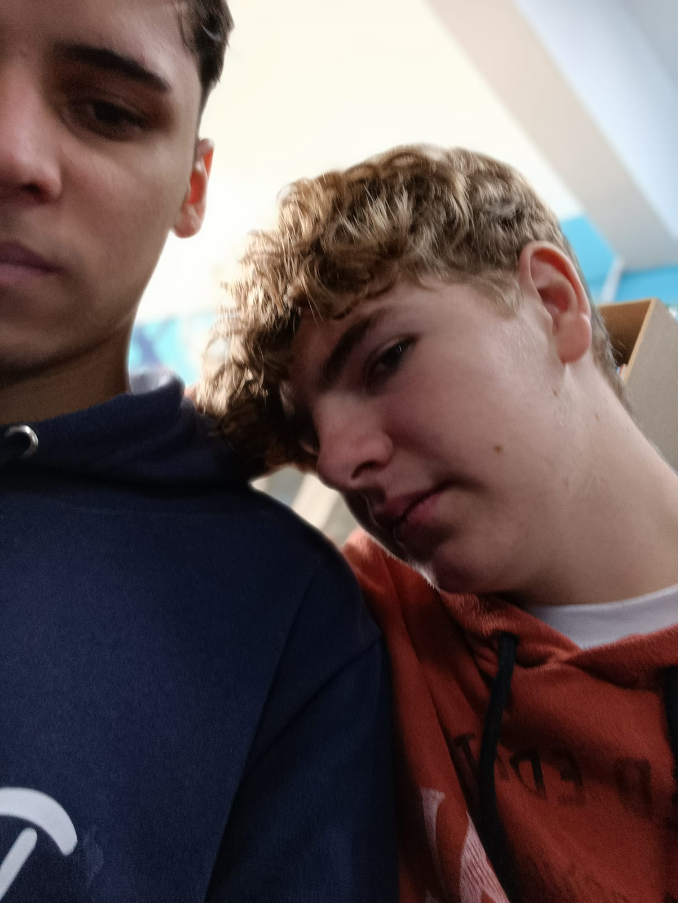
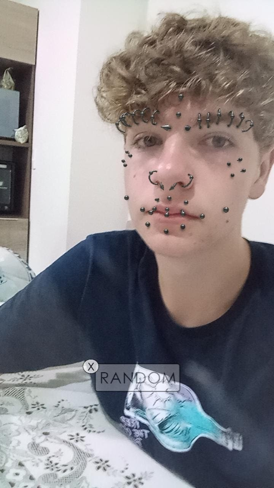

Carlos Henrique

Quem eu sou?
Olá, me chamo Alvaro, sou o único membro dos
cuecas que possui
namorada, sou filho da giane
(considerada por muitos a melhor professora) tenho 13 anos, meu signo é gêmeos porem sou filho único, adoro ir
no horario, jogar golfbattle (sou melhor que o Davi), e ficar em call com meus amigos, fui fazer a cirurgia da fimose mas não foi concluida pois fiquei com medo do
bisturi, no bar dos haitiano fiz amizade com uma velha me esfregando nela, fui chamado de boneca por um haitiano fake.
Observções finais: Meu cabelo é cachudo, tenho fama de mentiroso porem é mentira (estou mentindo agora).
Alguns fatos sobre mim
A Marcia prendeu minha cabeça no portão da escola após eu jogar uma
pedra no trilho. larguei meus amigos para
ficar com as novinhas. Não gosto de camisinha de morango. Pulei um muro para roubar caju e me
sujei todo de tinta. No meu aniversario de 13 anos foi acesso uma vela de 7 dias em meu cachorro quente. Sou são
paulino viadão viciado em baseado bem bolado
tanto que estoro até dentro da sala de aula.


Meus problemas pessoais🙁
1.sou muito fofo
2.amo de mais meus amigos
3.quando estou triste faço atrocidades



Me siga no kwai clicando no icone abaixo